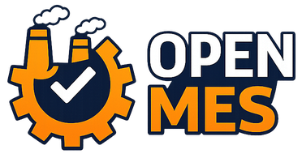
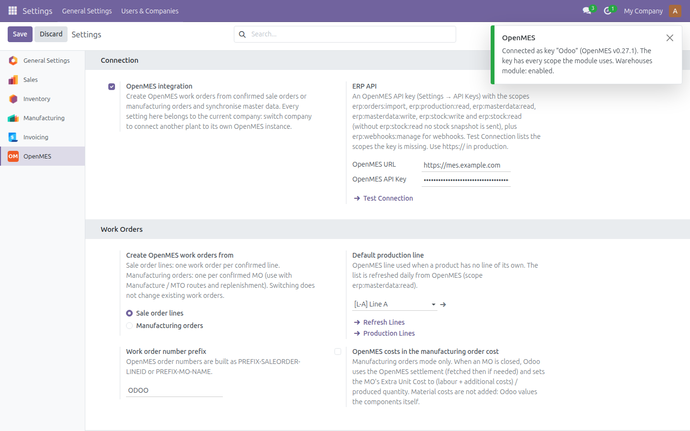
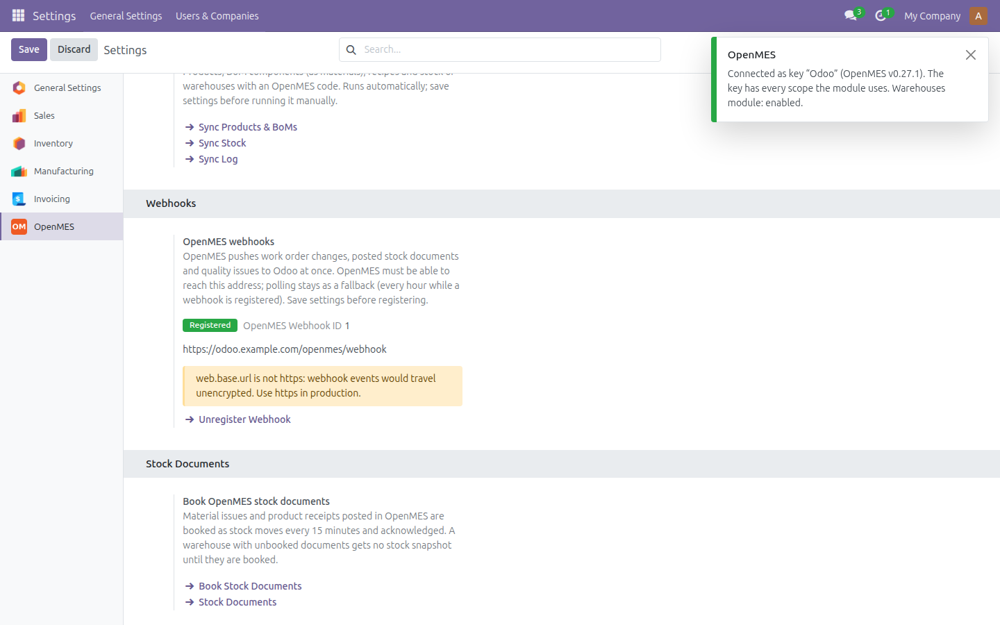
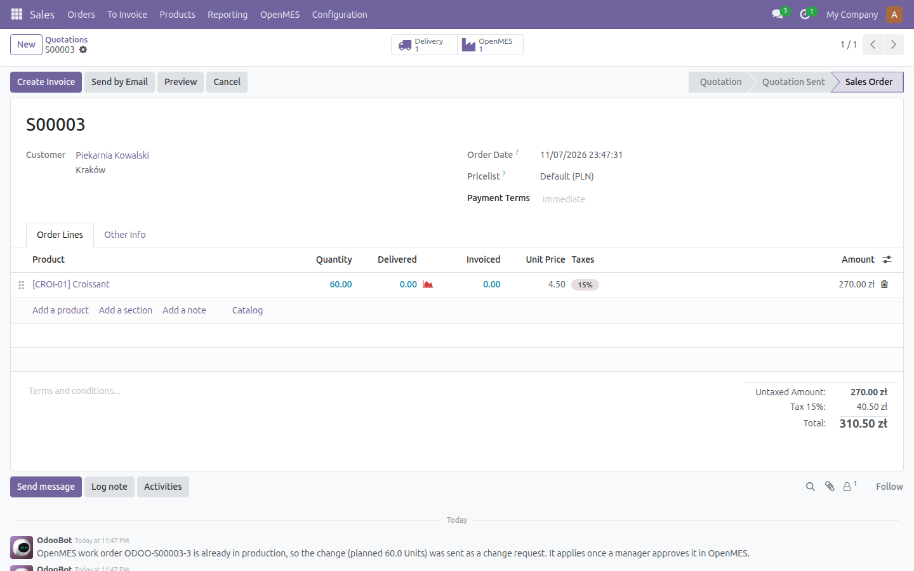
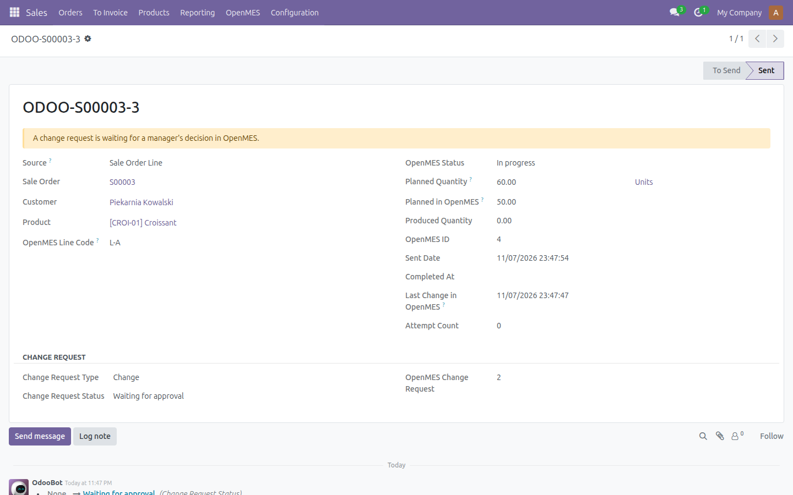
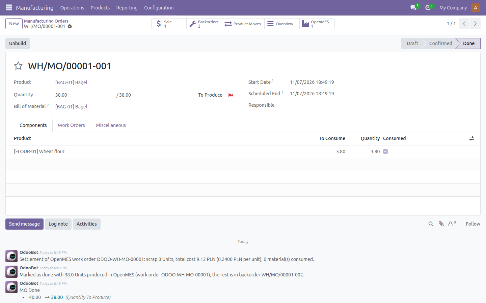
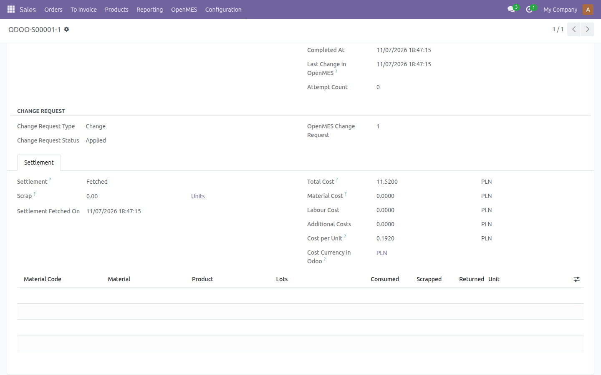
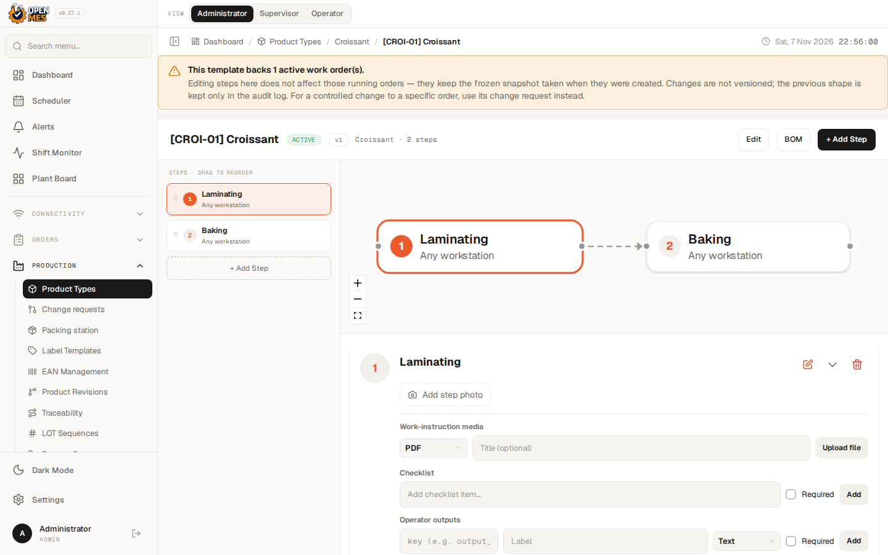
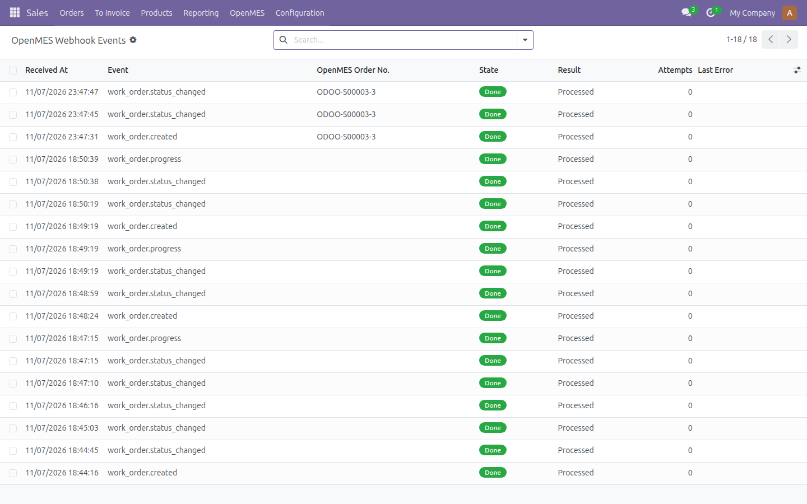

Connects Odoo 19 to OpenMES, the open-source manufacturing execution system, through the OpenMES ERP integration API. Confirmed sale orders or manufacturing orders become OpenMES work orders; status, produced quantities, change requests, settlements and stock documents come back to Odoo. Every Odoo company talks to its own OpenMES instance with its own API key.
Nine minutes, one take: connecting Odoo to OpenMES, a sale order becoming a work order, a quantity change approved on the shop floor, the settlement coming back, and manufacturing orders closed automatically.
Enter the OpenMES URL and an API key in Settings > OpenMES and click Test Connection. Odoo asks OpenMES what the key may do and lists every missing scope together with the features that will not work without it.
Production lines are read from OpenMES, so the default line and the line of a product are picked from a list instead of typed. Choose whether work orders are created from sale order lines or from manufacturing orders.


One click on Register Webhook and OpenMES pushes work order changes, progress, posted stock documents and quality issues to Odoo. Every delivery is checked with an HMAC-SHA256 signature and a timestamp; duplicates are answered and ignored.
Events are queued and applied one by one in the order they arrived, so OpenMES never waits for Odoo. Failed events are retried and can be retried by hand. The status pull stays as a fallback.
Confirming a sale order with a product flagged Manufacture in OpenMES queues one OpenMES work order per line. A cron sends it right after the confirmation, so confirming never waits on OpenMES or fails because of it.
The OpenMES smart button opens the work order with its state, OpenMES ID, status and planned and produced quantities. Every change is posted on the sale order chatter.


Changing the quantity or date of a confirmed order, or cancelling it, resends the work order. Before production starts OpenMES applies it at once; once the order is in production it becomes a change request that a manager approves or rejects in OpenMES.
The work order shows the request and both quantities (here 60 planned in Odoo, 50 in OpenMES). The decision comes back to Odoo. When OpenMES keeps or produces another quantity, a person gets a To-Do activity: Odoo never corrects documents on its own.
In the Manufacturing orders mode, confirming an MO of a flagged product creates its OpenMES work order; MTO, reordering rules and producing for stock all work.
When OpenMES reports the work order as done, Odoo marks the MO as done with the quantity produced and creates a backorder for the rest, which gets its own OpenMES work order. Lots of finished products are created with Odoo's numbering. Optionally, OpenMES labour and additional costs are added to the MO cost.


Once a work order is done in OpenMES, its settlement is fetched once and stored on the work order: scrap, total cost and cost per unit, material, labour and additional costs, and the material consumption with lots.
A summary is posted on the sale order or MO. The figures are information only, unless you switch on the OpenMES costs in the manufacturing order cost.


OpenMES is free and open source. You can download it, with installation instructions,
from its repository on GitHub:
github.com/Mes-Open/OpenMes
GET /api/v1/erp/me.The full guide (scopes, network requirements, multi-company, known limitations) is in the module documentation.
The module sends work orders (with the customer name and, for sale order lines, the unit price), products, bills of materials, routings, stock quantities and lots only to the OpenMES URL you configure, that is your own OpenMES instance. Nothing is sent to the module authors or any other third party. The API key and the webhook secret are stored per company, readable by administrators only, and never written to the logs.
Questions, implementation help, bug reports and feature requests:
contact@getopenmes.com
Source code: github.com/Mes-Open/OpenMES-Odoo-integration
Licence: LGPL-3. Maintained by the OpenMES Team.